A história da anatomia humana pode ser dividida em quatro fases principais:
- A primeira pertence à antiguidade, os precursores;
- A segunda sobreviveu com a decadência do Império Romano, que atingiu as ciências, as artes e também a Anatomia – Era Muçulmana;
- A terceira fase chamada de Restauração, data do Renascimento das ciências na Itália;
- A quarta fase corresponde à introdução do microscópio simples ou composto; e à anatomia e embriologia comparadas.
1ª Fase - Os Precursores
Sumérios - (volta de 1500 a.C.)
Podemos dizer que a anatomia teve seu início com a simples observação de animais abatidos, sacrifícios, embalsamamentos de cadáveres, ferimentos extensos de paredes, atingindo cavidades.
A anatomia da civilização Servia, que floresceu há 6 mil anos em UR, Uruk, Lagosh, na Mesopotâmia é a mais antiga que conhecemos: baseava-se na astrologia, pois os sumérios acreditavam que o destino do homem era governado pelos astros, desde o momento do nascimento.
Os escritos cuneiformes da Mesopotâmia antiga (hoje grande parte é o Iraque) demonstram que 4.000 anos antes de Cristo já era povoada e é considerada o berço da civilização.
Assurbanipal organizou em Nínive uma biblioteca com cerca de 30.000 placas de barro.
Sabe-se que cerca de 2000 anos a.C., a catarata era conhecida pelos babilônios e já executavam as cirurgias, inclinação do cristalino com uma agulha de bronze.
O símbolo da Medicina que é o caduceu, uma cobra enrolada num bastão, provavelmente tem origem nessa civilização Suméria; 2400 a.C.
Egípcios
Através da prática do embalsamamento tiveram a oportunidade de examinar vísceras humanas e desenvolver conhecimentos anatômicos, ainda que rudimentares; utilizaram de 200 a 214 nomes para identificar as partes do corpo.
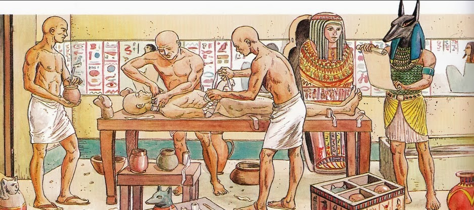
Athális, 3000 a.C. soberano da primeira dinastia egípcia teria escrito um livro sobre anatomia.
Na mumificação praticada pelos egípcios; as vísceras eram retiradas do cadáver e introduzidas em recipientes.
O coração não era retirado pois era entendido como o Sol do corpo.
Supõe-se que os egípcios tivessem conhecimento da Anatomia em face das cirurgias praticadas, e que certamente remontam aproximadamente há 5000 anos.
Sabiam recompor fraturas e conheciam grande número de doenças.
No Egito os médicos, os sacerdotes fizeram experiências com drogas em prisioneiros de guerra e escravos.
Também diziam que diretamente do coração para o quarto dedo da mão esquerda ia um fino “vaso” e daí este dedo ser chamado entre os anatomistas da Idade Média de: digitus cordis.
Como o casamento é, ou deve ser negócio do coração, o anel ou aliança usa-se somente no digitus cordis.
Na medicina Hindu (1500 a.C.) há referência de que não podiam dissecar o cadáver antes de ficar imerso no rio, numa jaula. e daí os órgãos poderiam ser estudados.
Menés, médico do faraó durante a primeira dinastia egípcia parece ter sido quem primeiro escreveu um livro de anatomia (3400 a.C.) (antes das pirâmides serem construídas).
Depois dos persas vieram os macedônios e, mais tarde, os romanos pondo fim a uma das mais brilhantes civilizações antigas.
A anatomia dos Hindus permaneceu num estágio prematuro devido à proibição ditada pela religião, de estudar em cadáveres.
A cremação dos cadáveres era obrigatória.
Gregos
Segundo a mitologia, Hymen (ou Hymenaios), filho de Apolo e Afrodite, é o deus grego do casamento.
Seu culto era celebrado durante as núpcias do casal.
Hymeneu era o termo empregado no conjunto de hinos cantados durante a cerimônia.
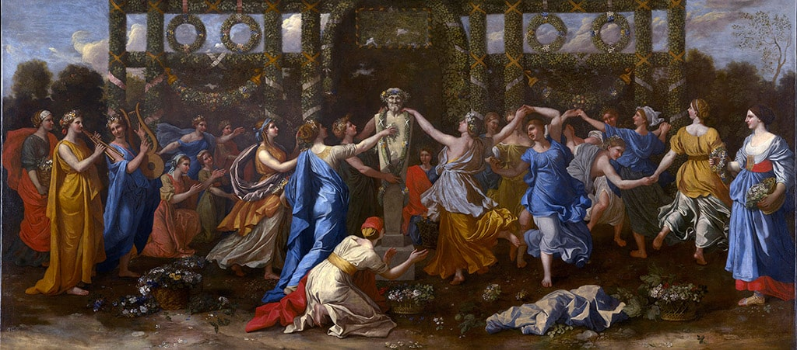
Antes de Hipócrates, os gregos já haviam fundado escolas médicas, como a Iônica com Heráclito (500 a.C.), Anaxágoras e Empédocles na Sícília (490 a.C.), Diógenes (430 a.C.), que procuram esclarecer a estrutura anatômica por uma dissecação em animais, sendo que Empédocles já conhecia o labirinto auditivo.
Para Platão (427-347 a.C.) o som é vibração que parte do ar e se propaga pelos ouvidos até a alma por intermédio do cérebro e do sangue.
A audição, porém, é o movimento provocado por essa vibração que, começando na cabeça termina na região do fígado.
Hipócrates (460-372 a.C.) considerado o pai da Medicina, no campo da Anatomia nada realizou de grande importância.
As observações relacionadas à Anatomia, contidas em sua obra, baseiam-se na dissecação de animais.
Para ele, o fígado era o órgão da preparação do sangue, dele e do baço partiriam os vasos, o ar chegaria ao coração esquerdo através da traqueia e dos pulmões e daí era distribuído como pneuma.
A base fundamental da doutrina Hipocrática é tirar dos deuses o direito de curar e entregá-lo aos homens.
Descreveu o pericárdio, como segue: “o pericárdio é um envoltório, uma capa lisa, que rodeia, envolve o coração, contém líquido em pequena quantidade e semelhante à urina”.
Foi para a época um grande médico, mas um medíocre anatomista.
A escola herofiliana
Na Alexandria (320 a.C.) surgiu a Escola Médica fundada por Ptolomeu Sotero.
Na partilha do Império de Alexandre Magno (333 a.C.), o Egito coube a um de seus generais, Ptolomeu Sotero, que se tornou rei e iniciou uma longa dinastia que acabou em 30 a.C. com a morte de Cleópatra VI, quando a Alexandria tornou-se uma província romana, perdendo sua grandeza e esplendor, tendo sido capturada por Julio César (48 a.C.).
Outro general foi Seleuco e o 3º Hisímacos.
Nessa escola floresceu a Anatomia Humana e temos homens como Herófilo e Erasístrato.
Herófilo, médico e anatomista grego, nascido na Calcedônia, discípulo de Praxágoras de Cós, é considerado o fundador da Anatomia como disciplina científica.
Fez pela primeira vez um estudo sistemático no cadáver humano.
Gozava de grande prestígio frente ao rei Seleuco da Síria em Selêucida do Tigre, cidade perto de Bagdá.
Seleuco foi um dos generais de Alexandre Magno.
Herófilo e Erasístrato, segundo conta a história, dissecaram criminosos vivos em Alexandria, cedidos pelo Rei Seleuco.
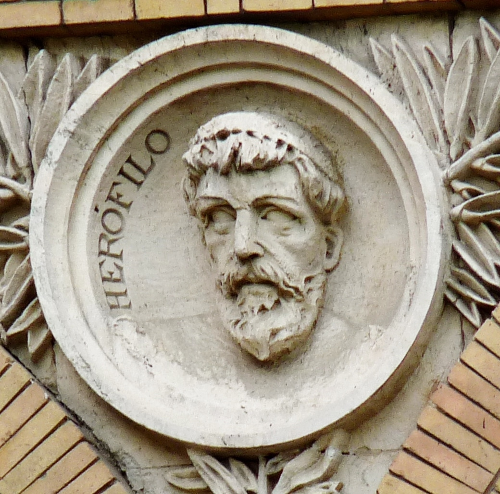

aristóteles
A história da morfologia começou com Aristóteles (384 a 322 a.C.).
O Stagirita, filho de médico da corte macedônica, mestre de Alexandre, O Grande, discípulo de Platão.
Seu maior mérito do ponto de vista da Anatomia reside na História animalium.
É o fundador da anatomia comparativa; tinha bons conhecimentos entre os órgãos humanos e de animais.
Conhecia em partes as particularidades do coração e suas relações com os vasos, sabia que as artérias partiam da aorta.
Na época de Aristóteles, Proxágoras de Kos (350 a.C.) já fazia distinções entre artérias e veias.
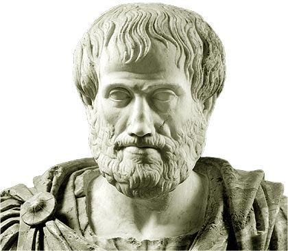
Considerava os nervos como sendo ocos a fim de espalharem pelo corpo os espíritos da vida gerados no cérebro, e denominado spiritus animales para se diferenciarem dos spiritus vitalis que eram formados de ar e sangue no coração esquerdo e transportados pela aorta.
Esta doutrina perdurou até o século XVIII; ele dizia que de todas as partes do corpo, não existia nenhuma tão fria como o cérebro.
claude galeno
O último da Escola Herofiliana.
Foi um dos médicos escravos da corte de Septimus Severus e de Comodus na Roma imperial.
Nasceu em Pergamo, cidade grega da Ásia menor, hoje Turquia – 131-201 d.C.
Como médico da Escola de esgrima de Pergamo, pôde observar através de ferimentos de gladiadores, a anatomia humana.
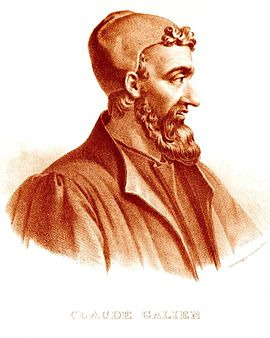
Elaborou a teoria sobre o papel do coração e do sangue.
Descreveu o coração, suas paredes, suas cavidades, suas válvulas e as cordas tendíneas.
Para ele, as moléculas do ar são levadas ao coração por intermédio dos pulmões, mas não chegou a demonstrar a pequena circulação ou circulação pulmonar; por outro lado, refere que os alimentos levam aos intestinos substâncias nutritivas que constituem o quilo.
Quanto não teria realizado Galeno na anatomia se lhe fosse permitida a dissecação de cadáveres humanos, uma vez que viveu em uma época onde infelizes eram sacrificados pelo capricho da população romana, em particular pelos seus imperadores, que não permitiam à anatomia servir-se de cadáveres.
Dissecava muitos animais: cabras, porcos, macacos.
Galeno se aperfeiçoou na teoria de Erasistrato sobre a pneuma.
Ele descreveu o esterno como constituído por sete peças, tanto como as costelas que nele se inserem.
Demonstrou que as artérias carregavam sangue e não ar.
Já conhecia o infundíbulo da hipófise, que admitia comunicar-se com a cavidade nasal.
Também conhecia as cartilagens da laringe e segundo os entendidos a cartilagem tireóide foi batizada por Galeno com o nome de Chondros Thyreoides porque se assemelhava ao escudo cretense, o Thyreos dos gregos, escudo que ia do queixo ao tornozelo, com um entalhe na parte alta e mais eides com o significado de semelhante daí thyreo-eides – semelhante a um escudo.
Galeno era muito vaidoso de seu próprio conhecimento.
Por ser muito crítico acabou despertando ciúmes e rancores em outros médicos.
Decidiu deixar Roma e retornou à Pérgamo.
As obras de Galeno constituem daí por diante, durante um período de 13 séculos a base dos conhecimentos anatômicos. Para ele a anatomia seria o fundamento da medicina.
Sobreveio a decadência do Império Romano atingindo todas as ciências e artes, recaindo também sobre a anatomia.
Não mais se fizeram pesquisas novas e até conhecimentos adquiridos caíram em esquecimento,e a decadência adquiriu dimensões ainda maiores quando, no século VII, também a antiga cultura do Oriente se extinguiu pelo Islamismo.
2ª Fase - A era Muçulmana
Durante muito tempo os árabes se tornaram os guardiões da medicina científica.
As obras da antiguidade, sobretudo as helênicas, à medida que se salvaram da destruição, foram traduzidas, modificadas e adaptadas ao povo.
O período que assim se inicia é o arabismo na medicina.
Não houve progresso da anatomia nessa época já porque o Korao constituía um obstáculo intransponível para a pesquisa anatômica.
Entre os árabes, Rhases, diretor do hospital de Bagdád (850-923), já tinha conhecimento sobre o bulbo ocular.
Oriundo da Pérsia, foi considerado o príncipe da medicina árabe e já conhecia a catarata.
O persa Avicena (980-1037) estudou medicina em Bagdad, referia que a cegueira não era por causa do cristalino, mas sim pelo nervo óptico.
Podemos citar ainda nesta fase Avensohar no século XII e seu discípulo Averrhoes.
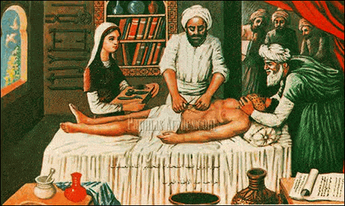
Embora não havendo progresso da ciência diante da renúncia à pesquisa científica próprias nas escolas árabes, estas escolas não deixaram de ter influência sobre períodos subsequentes, pois seus trabalhos ainda que alterando conhecimentos da antiguidade com um colorido místico e nebuloso, representaram durante a idade média, a base principal para conhecimentos médicos do ocidente.
O arabismo começa a retroceder e a observação direta no cadáver reaparece.
O primeiro a ser mencionado nessa nova linha é o bolonhês Mundinus Raimundo de Lucci (1275-1326), ou Luiggi Mondino de Luzzi – Mondino abreviatura de Raimundo d´Luzzi, das armas de família.
Filho de um padeiro, trabalhou primeiro no comércio e depois estudou medicina.
No início do século XIV, tornou-se professor em sua cidade natal, ocupando-se intensamente com a anatomia, tendo dissecado vários cadáveres humanos e escrito um compêndio de anatomia baseado em observações próprias mas ainda impregnado das afirmações de Galeno.
Este compêndio apareceu em 1314 – Anatomia Mondini, que foi produzido antes da invenção da imprensa, foi reproduzido e ao mesmo tempo muito deturpado em números manuscritos ora sob o título de Anatomia Mondini, Anatome Omnium Humani Corpuris Interiorus Menbrorum.
Continha em 77 páginas tudo o que se sabia na época sobre anatomia humana e foi usado para estudo em muitas escolas médicas até o século XVI, até os tempos de Vesálius.
Em 1944, Young, em sua História da Cesariana (History of Caesarean Section), escreveu:
‘Mohammedanismo absolutamente a proíbe (a cesariana) e ordena que qualquer criança assim nascida deve ser morta imediatamente, uma vez que é descendência do diabo’.
Esta declaração coincide com o que Rique tinha dito, mas foi citada sem referência a qualquer fonte original.
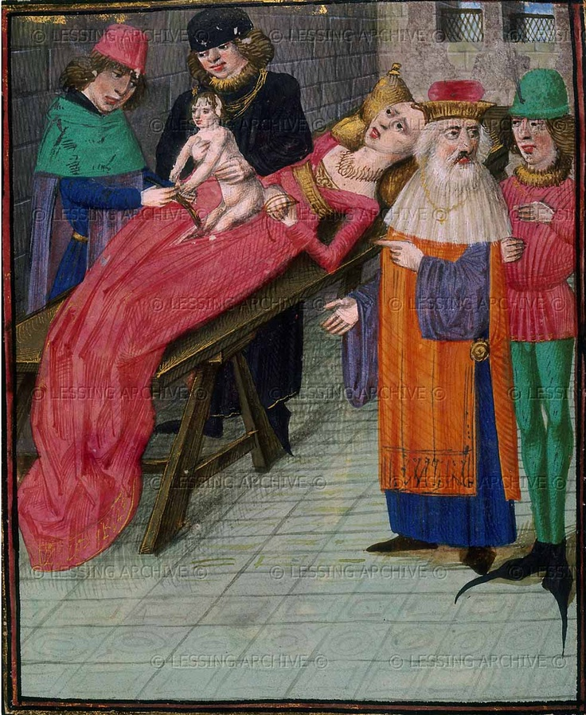
Um exemplo mais moderno vem de Wright, que também escreveu que a religião muçulmana absolutamente proibiu esta cirurgia.
Esta opinião foi expressada novamente sem qualquer evidência de apoio, mas vagamente argumentou que esta cirurgia não tinha sido mencionada nos escritos de alguns dos grandes médicos árabes da Idade Média.
Mas no mesmo parágrafo o autor também afirmou que nem a tinham mencionado qualquer um dos grandes escritores médicos europeus, por exemplo, Eucharius Roslin na famosa Rosegarten publicada em 1513.
3ª Fase - Restauração
Esse período é marcado pelo triunvirato anatômico – Vesalius, Eustáquius e Falópia.
Naquela época fecunda em que o espírito humano partiu as cadeia de uma escolástica sem discernimento despertou também com vigor a consciência da necessidade dos estudos anatômicos e manteve-se firme contra as adversidades e a perseguição.
Instituíram-se pela primeira vez cátedras de ensino nas mais importantes cidades da Itália, França e da Alemanha.
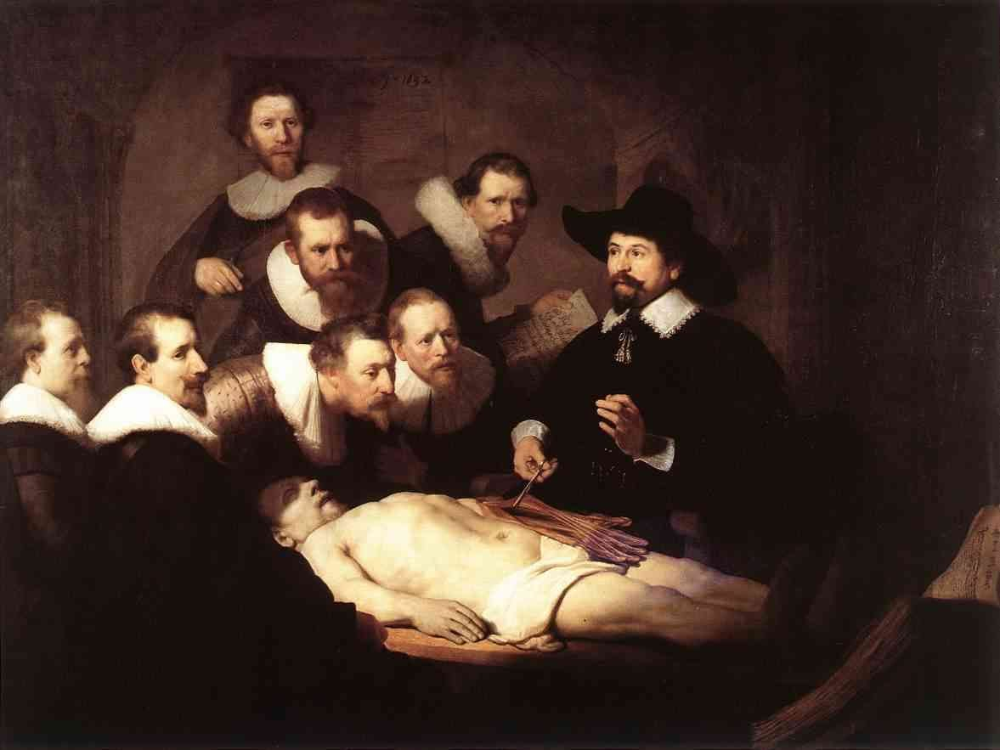
Esse tempo era então chegado para a Anatomia e o grande homem que o trouxe foi Andreas Vesalius, o reformador da Anatomia.
Ele nasceu em Bruxelas em 1514; sua família provinha de uma região alemã, de Vesel, no ducado de Clev, donde seu nome: Vesalius.
Seus inimigos de fé católica chamavam-no Lutero da Anatomia.
Estudou em Lóuven, dedicando-se ao estudo das línguas e ciências naturais.
Em 1532 dirigiu-se a Montpellier para continuar seus estudos de ciências naturais e dali para Paris, sob a direção de Sylvius, dedicar-se à anatomia.
De Humani Corporis Fabrica Libri Septem ou simplesmente De Humani Corporis Fabrica (Da Organização do Corpo Humano) é um livro de anatomia humana, escrito por Andreas Vesalius em 1543.
Considerado um dos mais influentes livros científicos de todos os tempos, De Humanis Corporis Fabrica é conhecido sobretudo por suas ilustrações, algumas das mais perfeitas xilogravuras jamais realizadas.
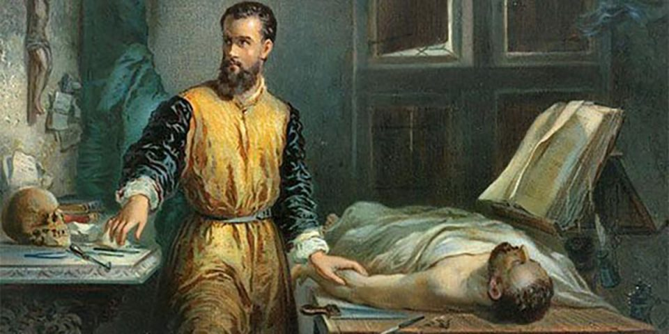
Gabriel Fallopio de Modena (1523-1562), foi discípulo de Vesalius; foi professor de Anatomia em Ferrara, Pisa e Pádua, onde acumulava as cadeiras de Anatomia e Cirurgia.
Distingue-se pelas suas pesquisas cuidadosas (Observationes Anatomical, 1561).
Conta a história que Fallopio, em Pisa empreendeu pesquisas sobre o modo de ação de venenos em criminosos condenados.
Em 1562, Fallopio aposenta-se e deixa Pádua; é substituído por Geronimo Fabricius.
São atribuídas à Fallopio as seguintes descobertas: canal do nervo facial, ligamento inguinal, tuba uterina e segundo alguns, a valva ileocecal, o osso etmóide suas células, o ducto lacrimal, e o seio esfenoidal.
Fez uma descrição precisa dos nervos cranianos em especial os três ramos do trigêmio.
Geronimo Fabricius nasceu em 1537 em Acquapendente, na região do Piemonte.
Ganhou fama na Universidade de Pádua.
Chegou a Pádua mandado pelos pais para prosseguir no curso de humanidades, ajudado por protetores começou a estudar medicina.
Foi excelente médico e cirurgião de rara habilidade. Cuidava dos mais ricos personagens da República de Veneza e se recusa sempre a aceitar a menor remuneração em dinheiro, mas foi alvo de um número incalculável de maravilhosos presentes.
Foi fundador do Anfiteatro Anatômico de Pádua.
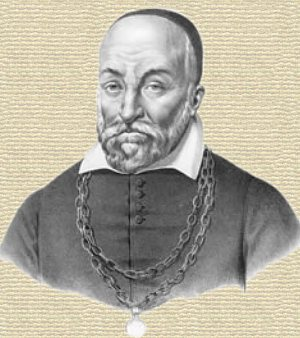
A República de Venesa dispensou a Fabricius atenções especiais; chegou a recolher nos últimos anos 1100 ducados (peças de ouro) por ano, quantia realmente elevada para a época e principalmente para um professor.
Ele descreveu com precisão as válvulas das veias (1574) apresentadas em suas figuras.
Em 1600 Fabricius publicou em Veneza uma obra de anatomia humana e animal. – “De Formate Foetu Libre”. Referem autores que as veias já haviam sido estudadas no primeiro século (d.C.) por Galeno e no século XVI por Andréas Vesalius.
Em 1603 publicou um trabalho sobre as válvulas – “De Venarum Ostiolis”.
Julio Cesar Aranzio (1530-1589), ocupou a cadeira de anatomia de Bolonha durante 33 anos (1556-1589).
Também foi pupilo de Vesalius.
Foi o primeiro a descrever o forame oval e provavelmente o ducto arterioso; ele propôs o termo hipocampo; descreveu o ducto venoso.
Somente anos mais tarde é que La Peirese (1628) descreve os vasos quilíferos no homem.
Nem Aselli e nem La Peirese conheciam o tronco principal desse sistema linfático.
Foi Jean Pecquet (1622-1674) que em 1649, ainda estudante de medicina em Montpellier descreveu os vasos quilíferos terminando num saco ou reservatório, situado próximo à aorta, na frente da coluna vertebral, e que mais tarde recebeu o nome de Cisterna de Pecquet, hoje cisterna do quilo. T
ambém descreveu um ducto, saindo deste reservatório, dirigindo-se para cima na parte superior da coluna vertebral; era o ducto torácico.
No homem, a Cisterna de Pecquet foi descrita por Olaus Rudbek em Uppsala, em 1650 e apresenta uma descrição minuciosa dos vasos quilíferos (linfáticos).
Johannes Van Hoorne (1652), descreve o ducto torácico no homem, e também Thomas Bartholin (1653), assim como a sua desembocadura na veia subclávia esquerda.
As publicações de Hoorne e Bartholin foram apresentadas no mesmo ano (1653), onde se compreende o questionamento sobre a prioridade da descoberta.
Mais tarde, Frederick Ruysch (1638-1731), professor de anatomia em Amsterdan, descreve as válvulas dos linfáticos e demonstra a circulação linfática.
Foi um grande mestre na arte da injeção e fez muitas peças, por exemplo, das artérias coronárias e em seu museu possuía ao redor de 1300 peças conservadas em líquidos.
Atribui-se a ele a primeira descrição dos vasos sanguíneos bronqueais da parte torácica da aorta; aperfeiçoou o método de introduzir massas coradas nos vasos, método iniciado na Itália por Desmanes.
No século XVII os anatomistas holandeses se distinguiram na arte de preparar peças anatômicas e executar injeções cadavéricas.
Lembrar que o álcool só foi usado para conservação ao redor de 1660.
4ª Fase - O Microscópio: Anatomia e Embriologia comparadas
Ao período da restauração da reforma da anatomia segue-se agora outro, caracterizado pela introdução do microscópio simples ou composto no estudo da morfologia.
Foi o naturalista holandês Antoni Van Leeuwenhoek (1632-1723) que em 1714 associou a coloração ao exame microscópico.
O microscópio só surgiu entretanto, em fins do século XVI, quando em 1590 Johannes Janseen e seu filho Zacharias Janseen construíram na Holanda, um aparelho rudimentar para ampliar imagens.
Este aparelho transformou-se depois nas mãos de Galileu Galilei (1564-1642) na luneta astronômica.
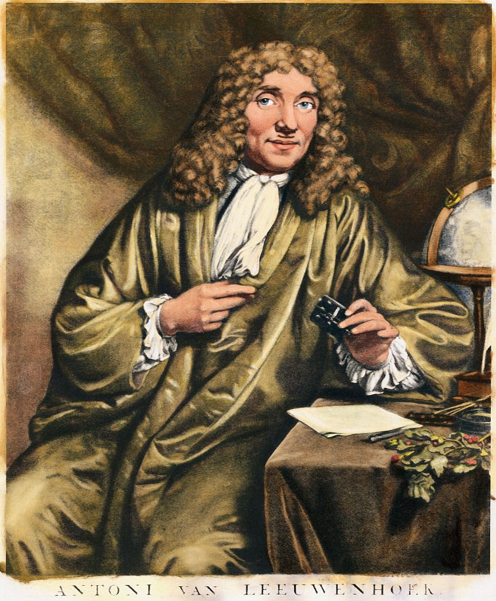
Desde a antiguidade sabia-se que lascas de cristal transparente com superfície curva aumentavam o tamanho das imagens e já no século XV eram fabricados lentes e óculos com base neste princípio.
O microscópio rudimentar foi melhorado por um físico inglês Robert Hooke(1635-1703) e também por Leeuwenhoek.
Em 1661 Marcellus Malpighi (1628-1694) em Pisa, descreve a passagem de sangue das artérias para as veias no pulmão e Leeuwenhoek no mesentério, ambos na rã viva, confirmando e completando a doutrina de Harvey.
O nome de Malpighi está ligado às seguintes estruturas: corpúsculos do baço, estrato mucoso da pele, pirâmides renais; é considerado o fundador da anatomia microscópica e descreve os capilares; vasos finos, como o cabelo (capili).
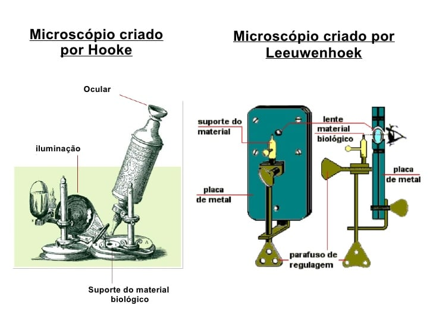
Marcellus Malpighi foi professor de Pisa, Messina e Bologna.
Segundo Fort (1902) Leeuwenhoek foi o descobridor do espermatozóide e dos glóbulos do sangue.
A família Bortholin, Thomas (1616-1680) e Caspar Bertholin (1655-1738). Thomas descreve a desembocadura do aqueduto do mesencéfalo no terceiro ventrículo, o ducto torácico, o forame abturado.
Caspar descreve o ducto sublingual maior também descritos por Ravinus e Santorini, a glândula sublingual, glândula vestibular maior, também descrita por Dewerney e Tiedemann.
Pertencem à mesma época, Thomas Wharton (1616-1673), anatomista inglês, estudou o pâncreas e descreveu a glândula submandibular e o seu ducto (1656).
Depois deles, muitos outros descreveram o corpo humano a partir do microscópio.
Ao início da pesquisa microscópica segue-se a época em que a anatomia e embriologia comparada entram amplamente no pensamento humano.
Esses dois importantes ramos da ciência apareceram quase que simultaneamente.
Para ambos, foi de grande valor o fato de que o microscópio já tivesse sido descoberto.
O primeiro a ser lembrado é Carolus Linnaeus, chamado mais tarde Carl Von Linné (1707-1778).
Ele é o criador do “Sistema de Classificação Binária”.
Naturalista e botânico, professor da Universidade de Uppsala, é considerado o fundador do moderno sistema de taxomomia.
Forma-se em medicina e depois em História Natural.
À Linné corresponde o mérito histórico de ter estabelecido a classificação dos reinos vegetal e animal.
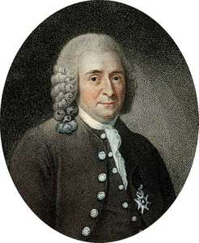
Em 1835 Rudolf Wagner encontrou a mácula germinativa.
Os métodos de pesquisa foram aperfeiçoados e surgiu a Embriologia Comparativa.
Podemos citar o Handbuch der Entrick lungageschicht de Fr. Balfour, rementendo o leitor à rica literatura embriológica dos últimos decênios, sobre o qual os importantes tratados de embriologia de Rudolf Albrecht Von Kolliker (1852-1937), Keibel Mall Kiellmann, Chris S. Minot, H.E. Zigler, Broman, Corning, Fischel, que dão maiores informações com relação aos vertebrados.
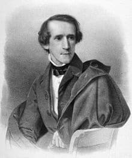
À Anatomia Comparativa e Embriologia Comparativa (ontogênese), associa-se ainda a Filogênese.
A embriologia individual e comparada estuda apenas o modo como novos indivíduos se formam a partir dos indivíduos paternos já existentes.
Não pergunta sobre a “primeira” formação (origem) dos indivíduos (protogênese), mas sobre sua reprodução (deuterogênese).
A idéia fundamental da teoria de Darwin consistia na afirmação de que a hereditariedade e adaptação eram os dois grandes princípios na luta pela sobrevivência, a partir das quais se desenvolveu a multiplicidade dos organismos.
Os organismos superiores aparecem sob este aspecto como produtos transformados a partir dos organismos inferiores, sem que aqui ou ali estivesse excluída a ocorrência de uma regressão.
Mas todos organismos, de acordo com a teoria, têm parentesco maior ou menor entre si.
A hereditariedade aparece aqui como força conservadora, a adaptação como força transformadora, que no correr dos tempos eleva o organismo inferior aos graus de perfeição maior.
A literatura sobre o desenvolvimento filogenético é muito ampla e deve ser procurada nas obras de anatomia comparada e embriologia.
“Precisa a classe médica entender a necessidade de uma formação histórica suficiente, rigorosa e profunda a ponto de constituir um hábito intelectual, conhecer e respeitar as conquistas do passado”.
Não podemos duvidar que a História da Anatomia representa uma parte importante da história da civilização humana.